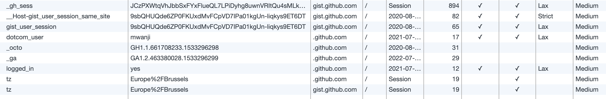

- history
- want to write static html in "notepad": no 3rd party tooling, author from anywhere
- plain html + web components + html -> rss generator
- web components:
- SHADOW DOM IS NOT REQUIRED!!!! You can add light DOM in constructor (or connected callback). Great when web components are site-specific. Under-discussed: Shadow DOM is to encapsulate web components distributed across projects, eg. via module imports or NPM. cf. https://www.hjorthhansen.dev/you-might-not-need-shadow-dom/
- social-links: pure HTML, so what I actually want is a bit of HTML I can reuse. Something nicer than string template literals.
- external CSS: only applied to light DOM: reason to avoid shadow DOM.
- with shadow DOM: no API whatsoever to include external resources or add styles? Template string literals are not an API
- tradeoff: repeated HTML vs. JavaScript required. Only use for secondary things: eg. social media links. If JS fails or is not available, main content can still be read
- fonts: need to be imported in host and in web component (security reasons?). Impact on Font Awesome.
- CSS: custom properties, @import, CSS grid => great!
- I kind of love that I can forget to include the JS file and it still works fine! Without the CSS file it's hideous, but all the content is visible and legible.
- 3rd-party embedded JS becomes static, too. Eg. gist. Not only code itself, but also all of the cookies are eliminated. See below how many Github adds when a gist is embedded.

This is even more useful when embedding from companies that do a lot more tracking, such as Facebook or Twitter. Of course, you won't get live like or share counts, but that downside is outweighed by the benefit of not helping giant social media companies track your readers.